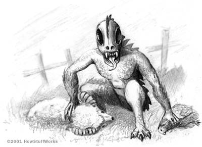

Name: Bigfoot, Sasquatch Location: Pacific Northwest of United States Description: A tall, hairy, primate like creature. Bigfoot is bipedal and stands taller than an average human. Usually described as having brown hair/fur and having a distinct walking style. Bigfoot-like creatures have been reported all across the world, such as the Yeti of the Himalayas and the Skunk Ape in Florida, perhaps all of them are connected in some way. Reports of this creature have been reported for centuries, and did not just start after the infamous Patterson-Gimlin film.
Loch Ness Monster
Name: The Loch Ness Monster, Nessy Location: Loch Ness, Scotland Description: The Loch Ness Monster is commonly depicted as being a large sea monster with a long neck. While this picture has been shown to be a fake, it is probably the most well-known photo of the Loch Ness Monster, and one many people might be familiar with. The Loch Ness Monster is just one of many sea monster cryptids, many lesser-known ones have been reported all across the world. This site will not explore the other sea monsters because they usually have the same description as the Loch Ness Monster.
Jersey Devil
Name: Jersey Devil, Leeds Devil Location: Pine Barrens, New Jersey Description: The Jersey Devil is typically described as having a goat-like face, a long neck, bat-like wings, and a pointed tail (like the devil). This cryptid is bipedal, with both its hands and feet being hooved. Witnesses have described it as fast and having a blood-curdling scream. Many agree this cryptid originated from a 1735 folktale, when Jane Leeds, who already had 12 children, cursed her soon to be 13th child as the devil. Shortly after being born, the child transformed into the Jersey Devil. While this is most definitely a myth, it does explain why there have been sightings of this cryptid. It certainly looks like something that would come from New Jersey.
Mothman
Name: Mothman Location: Point Pleasent, West Virginia Description: As the name suggests, Mothman is described as having the appearance of a large moth-like humanoid. Mothman is typically depicted as having gray fur and red eyes. What makes Mothman interesting more so than some of the other cryptids is that he is tied to a specific event. There were several sightings of Mothman in Point Pleasant between 1966 and 1967 until these sightings seemingly stopped following the collapse of the Silver Bridge. Many believe Mothman is connected to this tragic event in some way, perhaps acting as a warning of some kind. Point Pleasant now holds an annual Mothman Festival and has erected a statue of this legendary cryptid.
Wendigo
Name: Wendigo(s) Location: North America, specifically Canada and the United States Description: Physical descriptions of the Wendigo vary, although it is often depicted similarly to the provided image. The origin of this cryptid actually comes from the First Nations (Native Americans) of Canada and the United States. More specifically, this cryptid was part of the beliefs of Algonquin-speaking peoples, which include the Ojibwe, the Saulteaux, and other tribes. While these peoples had different physical descriptions of the Wendigo, other characteristics were common amongst all of them. The most common was that the Wendigo was cannibalistic with a strong association with winter and famine. While the existence of the Wendigo is questionable, it is still interesting many native peoples from various regions had a similar belief of this cryptid.
Chupacabra

Name: Chupacabra, El Chupacabra Location: Mexico, Puerto Rico, United States Description: The English translation of this name from Spanish literally means "goat-sucker". The Chupacabra is described differently amongst witnesses, common characteristics include being around the size of a small bear with spines running done it's back. The Chupacabra has also been described as being dog-like, lizard-like, and even alien-like. The origin of this cryptid comes from Puerto Rico in 1995, when several sheep were found dead with three puncture wounds. It is said all of them were completely drained of their blood.
Aliens & UFOs
Name: Unidentified Flying Objects (UFOs), Flying Saucer, Aliens, Extra-Terrestrials, Martians, etc. Location: Various Description: UFOs are usually described as "Flying Saucers" as the most common description is some sort of round metal object flying in the sky. Many believe aliens are piloting these UFOs and are visiting Earth to either observe or perhaps abduct people. There are many reported cases of alien abductions among people, whether believable or not, this phenomenon still exists. Some people aliens have been visiting us from far out in the galaxy, or even that they are living among us at this very moment. Recently the Pentagon released footage captured by Navy pilots that shows some sort of UFO. As the name UFO suggests, what the pilots saw is unknown even to the Pentagon (Source: NBC). The image shown is a still from the footage captured by these pilots. Aliens themselves are usually depicted as being smaller than humans, and very slender with large round heads and big black eyes, with either green or grey skin.